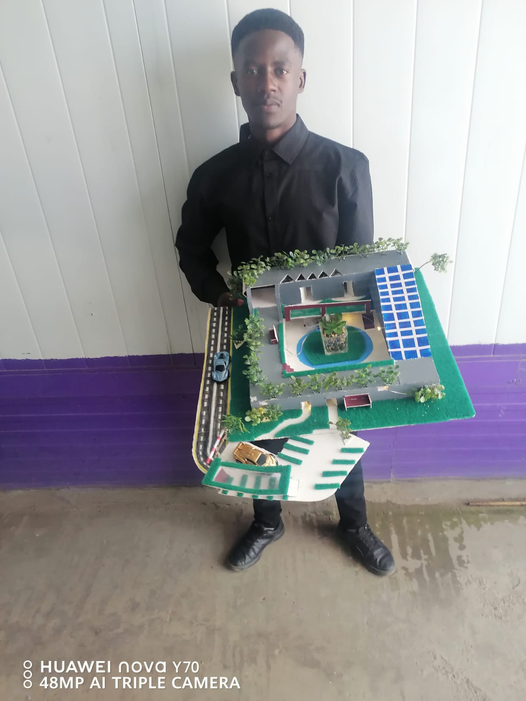

“Sustainability is not only a technical solution, but a moral responsibility.”
TerraNova GreenBuild is more than a construction startup — it is a movement toward building in harmony with the environment and the future. We envision structures that do not simply exist, but interact thoughtfully with nature, people, and communities.
By combining innovative design, sustainable materials, and ethical responsibility, we aim to demonstrate that construction can be both profitable and purposeful, practical and poetic. Every building becomes an opportunity to rethink how we live, conserve resources, and leave a meaningful legacy for generations to come.
TerraNova GreenBuild was founded to address both environmental and economic challenges in modern construction. Many buildings today consume excessive energy, rely on non-renewable resources, and result in high long-term costs for homeowners and businesses.
The idea began with a simple but powerful observation: construction should not harm the environment it depends on. Inspired by a passion for sustainability and modern design, the founder set out to create a company that prioritizes environmental responsibility without sacrificing comfort, beauty, or affordability.
Starting with small local initiatives in Maseru, the focus was on designing eco-friendly homes that maximize natural light, integrate renewable energy systems, and conserve water. These solutions not only reduce environmental impact but also provide long-term financial benefits.
Over time, TerraNova GreenBuild has grown into a startup with a broader vision — to expand across Lesotho and beyond, proving that green construction can be practical, accessible, and transformative.

Phomolo Rantho is a visionary deeply connected with nature, creativity, and the well-being of all living beings. His perspective is shaped by a unique blend of spirituality, philosophy, and environmental awareness.
His mindset draws from both Christian and Buddhist principles. From Christianity, he embraces stewardship — the responsibility to care for creation with integrity and compassion. From Buddhism, he draws mindfulness, balance, and the understanding of interconnectedness — recognizing that every action has a ripple effect on the universe.
He pursued his studies at Limkokwing University of Creativity and Technology, earning a Bachelor's degree in Business with a focus on Entrepreneurship. During this time, his creativity and innovative thinking developed significantly, leading him to explore solutions to environmental challenges such as pollution and unsustainable development.
TerraNova GreenBuild was born from this vision — not just as a business, but as a mission to restore balance between human progress and the natural world.
Traditional construction methods often result in high energy consumption, environmental degradation, and increased long-term costs. These challenges not only affect individual property owners but also contribute to broader issues such as climate change and resource depletion.
TerraNova GreenBuild addresses these challenges by designing and constructing buildings that are energy-efficient, resource-conscious, and environmentally sustainable.
Our work goes beyond construction — it contributes to environmental preservation, economic efficiency, and improved quality of life. Each project is designed to reduce carbon footprint, conserve resources, and create healthier living environments.
By promoting sustainable practices, TerraNova GreenBuild also supports job creation, skills development, and community empowerment.
“We do not build only for today, but for generations yet to come.”
This philosophy guides every decision at TerraNova GreenBuild. We see construction not simply as a business, but as a responsibility to create spaces that respect nature, serve communities, and sustain the future.